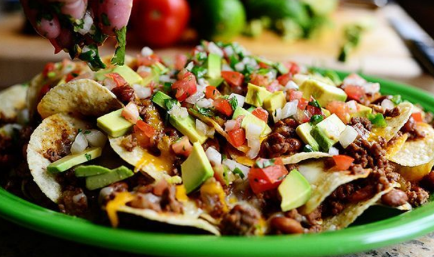

LOADED NACHOS (for sharing)

Description
Simply the best recipe for Loaded Nachos I've ever come across. But please be aware, there is a rule that says if two people order these nachos to share, one person can't take the ones with meat and stuff.
Ingredients
- cooking spray
- 1 (18 ounce) package tortilla chips
- 1-1/2 pounds cooked, Mexican-seasoned ground beef
- 1 (15 ounce) can black beans, drained
- 3 medium jalapeno peppers, thinly sliced
- 3 cups pico de gallo
- 1 (16 ounce) package shredded medium Cheddar cheese
- 3 cups queso blanco dip, warmed
- 1/4 head iceberg lettuce, shredded
- 1 cup sour cream
- 1 tablespoon water, or as needed
- 2 stalks scallions
Steps
- Preheat the oven to 400 degrees F (200 degrees C). Grease a baking sheet with cooking spray.
- Arrange a layer of tortilla chips on the tray. Sprinkle 1/2 of the cooked beef in a layer over the chips (don't drown the chips!) then layer with 1/3 of the beans, 1/3 of the jalapeno peppers, 1/3 of the pico de gallo, and 1/2 of the Cheddar cheese; drizzle 1/3 of the queso blanco over top. Repeat layers once more, starting with chips and ending with queso blanco. Cover with aluminum foil.
- Bake in the preheated oven for 20 minutes. Remove the foil and bake for 5 more minutes.
- Remove from the oven and transfer nachos to a platter. Top with shredded lettuce and remaining beans, jalapeno peppers, and pico de gallo.
- Stir sour cream with just enough water to thin slightly; drizzle over the nachos. Drizzle remaining queso blanco over top and sprinkle with scallions. Arrange remaining chips around the edges of the platter.
- Serve with plates and napkins for sharing. Keep an eye on the dish as people are eating, and make sure one person is not getting all the meat and cheese and stuff.